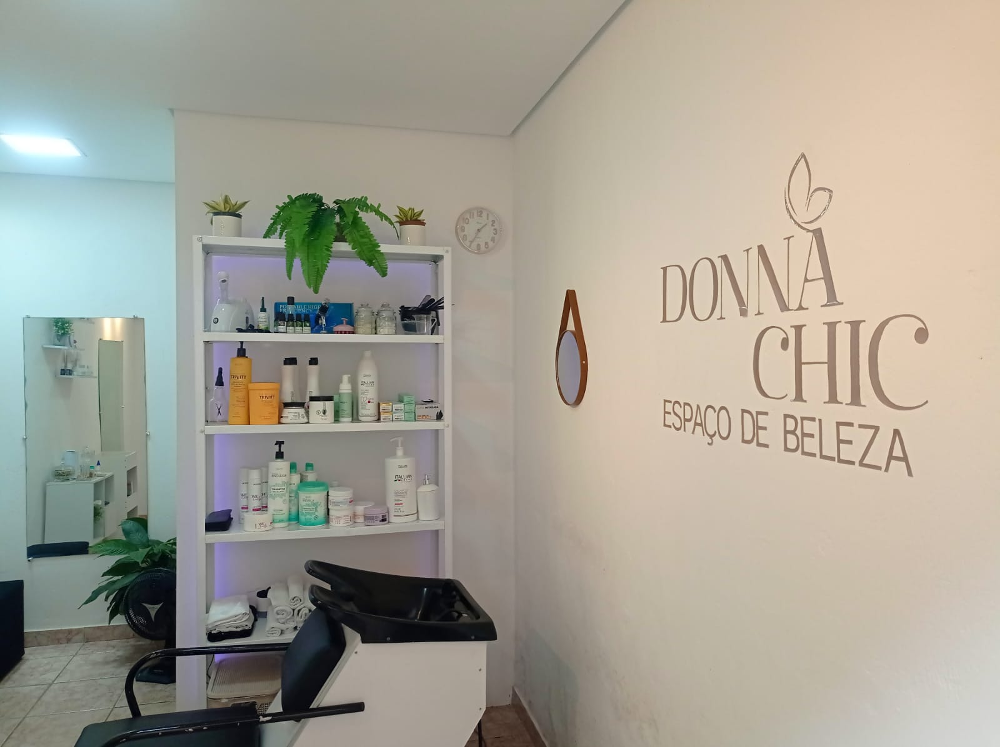

Quem nunca olhou para uma mulher e pensou:
“Nossa, que dona chique!”?
Foi a partir desse olhar — de admiração pela beleza, elegância e força feminina, que nasceu o Donna Chic.
Desde muito jovem, a paixão pelo universo da beleza já fazia parte da minha história.
Em 2010, dei meus primeiros passos com cursos de cabeleireira e manicure, iniciando atendimentos simples,
porém cheios de dedicação, para familiares e amigas.
Com o tempo, entendi que trabalhar com beleza vai muito além da estética.
È sobre resgatar autoestima, valorizar a identidade e revelar o melhor de cada mulher.
Cada fase vivida teve um propósito, cada desafio trouxe aprendizado.
E no tempo certo, no tempo de Deus, esse sonho começou a ganhar forma.
O Donna Chic nasceu dentro de um lugar cheio de significado:
Uma casa que sempre foi símbolo de acolhimento, alegria e simplicidade.
Hoje, ela se transforma em um espaço que une cuidado, sofisticação e afeto, sem perder sua essência.
Mais do que um salão, o Donna Chic é um convite:
Seja muito bem-vinda ao Espaço de Beleza Donna Chic.
Aqui, cada detalhe é pensado para você se tornar, ou reconhecer que já é, uma verdadeira Donna Chic.

Proporcionar bem-estar, valorização e autoestima por meio de tratamento estético com máxima eficiência e qualidade, com o desejo de que os clientes tenham experiências uniques.
Ser um espaço de referência regional pela excelência em terapia capilar e tratamento para cachos por meio de qualidade na prestação de serviços personalizados.
Selecione uma categoria para conhecer nossos tratamentos personalizados:
Um ritual de beleza que envolve a delicada arte de alinhar os fios, proporcionando brilho e suavidade, enquanto promove uma sensação de bem-estar e cuidado pessoal.
Perfeito pra quem quer praticidade e estar sempre arrumada!
Valores do Pacote:
*Orientações: Escovas não acumulativas, remarcação com mínimo de 24h de antecedência, plano válido por 30 dias com pagamento no início do mês.
Uma experiência de cuidado capilar onde os fios são suavemente tratados, domados e polidos, revelando um brilho radiante e uma textura sedosa, elevando a beleza natureza com cada movimento preciso e harmonioso.
Essencial para manter a saúde, a aparência e o crescimento dos fios. Elimina pontas duplas, previne quebras e deixa os cabelos mais macios.
Frequência recomendada: Curtos (4-6 semanas) | Médios a Longos (8-12 semanas).
Escolha o melhor dia e horário abaixo para vivenciar o seu ritual exclusivo de beleza e bem-estar. Nosso sistema reserva sua vaga instantaneamente.
Precisa de ajuda para escolher seu procedimento ou quer um horário personalizado? Nos chame no WhatsApp:
Falar com o Suporte Donna Chic